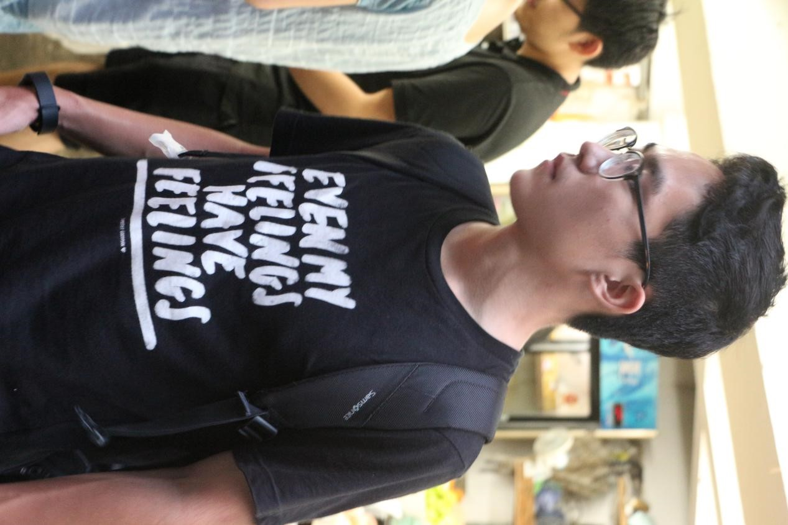
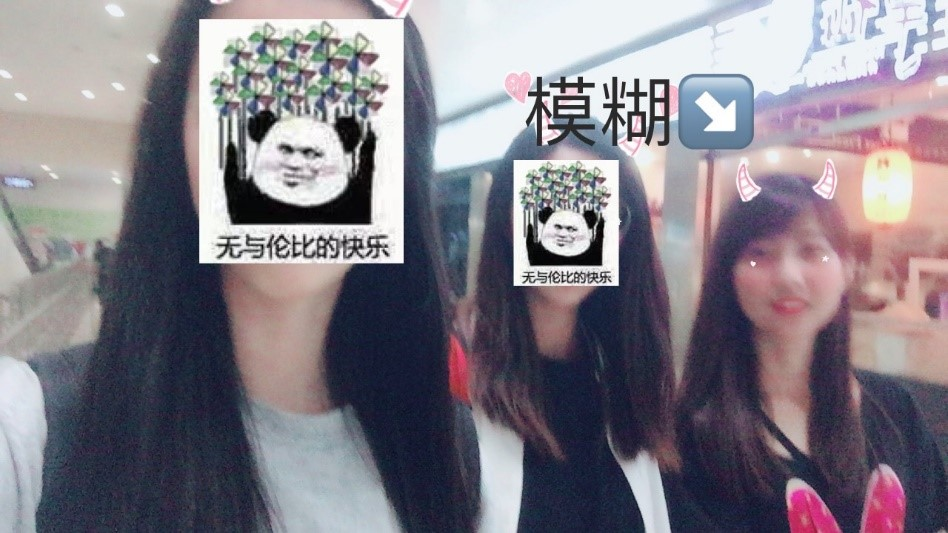

发信人: primrose (Primrose), 信区: outdoor
标 题: 【团爆】后勤组织部~
发信站: 饮水思源 (2018年09月19日13:39:50 星期三)
部长：李兴宇
我叫李兴宇，性别男（不然呢？？？），来自于安泰经济与管理学院，之前就是后勤
组织部的一员，跟着冬玉部长搞事情。说起来我很野协还是很有缘分的，在入大学之前我
就曾幻想有好朋友一起去野营登山，看灿烂的星空。但是在入学后并不知道野协的存在，
恰好冬玉部长是我在吉协的部长，跟着他我了解到了野协的活动，顿时惊醒，确认过眼神
，是我要加的协会，于是就被冬玉带进后勤组织部啦！
 screen.width - 200){this.width = screen.width - 200}">
我出的第一条线就是破冰线大明山，由于是第一次嘛，而且是由雪路，晚上真的是冻
醒了好吧，当时就在想为什么不在宿舍暖暖和和地待却跑这来受罪TAT。但是当真正完成一
条线路后才发现，自己的收获是超乎想象的，受过一些苦也值了，其实出线是会上瘾的！
screen.width - 200){this.width = screen.width - 200}">
在寒假时去参加了冬训，我们坐着硬座去北京攀冰。攀冰真的很有趣，虽然累，但是自己
在冰面上攀爬穿梭时，哇想想都酷。


副部长：孙彦
我是孙彦（没有绰号，嗯没有）是一个很内向，不善交际，比较腼腆，不爱说话，又
丑又穷没人要（认真脸）并且总是被学院堆成山的作业累成狗的密院菜鸡。虽然比较菜，
但爱好并不少，也不知道潜心学习，所以就更菜了。平时喜欢除了登山徒步，还喜欢坐火
车出去旅行，算半个铁路迷吧。也喜欢听音乐看电影吃吃吃等各种娱乐活动。反正不用动
脑子的都喜欢。看：我正常情况下是没有眼睛的
screen.width - 200){this.width = screen.width - 200}">
加入野协就有很多原因了，但总结起来就是两个字：热爱吧。对大自然的热爱和对登
山徒步这项运动的热爱吧。野协给了我一个接触户外运动的途径，真的非常感谢。也会不
断努力，争取为野协做出更多的贡献。为协会未来发展出一份力
出过第一条线是巨龙顶，这是我走过最不水的一条线（雾），因为第二天中午就没水
了，而五点才下山，这次出线让我体会到了水的重要性，幸好副领李铁也没水了，给了当
时作为萌新（一直都是）的我莫大的安慰（雾）。从那条线起，我爱上了野协。后来我走
过七尖，三尖，吴越古道等线，但因为很内向，不善交际，比较腼腆，不爱说话，（认真
脸）所以也没认识很多人。个人不是特别喜欢拍照（更懒得翻照片），就放这两张图吧。
不多说了要码代码去了。嗯加油。野协威武。
screen.width - 200){this.width = screen.width - 200}">
screen.width - 200){this.width = screen.width - 200}">
screen.width - 200){this.width = screen.width - 200}">
副部长：贺薇
新生杯被拐进了野协的坑，现在混迹各个部门打杂，喜欢当条咸鱼，也喜欢比较有挑
战性的事（所以我常在咸鱼瘫的时候想着要变强）。爱吃爱玩，但不爱被拍（得很chun的
）照。想出更多的线，到更多地方去看一看。
以及，加入野协使我变糙（微笑）。
screen.width - 200){this.width = screen.width - 200}">
偶尔撸猫
 screen.width - 200){this.width = screen.width - 200}">
日常模糊
副部长：文代洲
文代洲（宣传部长口中的文兄…）
早在暑假的时候就听说过交大野协，趁高数半期成绩还没出来和隔壁装备部的张越一
起入了贼窝哈哈哈
结果一晃到了期末的干事破冰线才是出的第一条_(:з」∠)_南方人表示第一次看雪
有幸跟着上上上届会长一队，在他老人家无限次重复你懂我意思吗的过程中体会到野外生
存的意义，都藏在大明山的林海雪原中
大一下开始跟攀岩队的日常训练，日常菜，日常无力，以及日常看TL大佬秀操作。
很不幸地是在最后也没有通过攀岩队的保护员考试（都怪队长坑太多
screen.width - 200){this.width = screen.width - 200}">
我在野协期待各位探索崇山峻岭的热忱之心(๑•̀ㅂ•) ✧
--
※ 来源:·饮水思源 bbs.sjtu.edu.cn·[FROM: 59.78.60.207]
※ 修改:·primrose 于 2018年09月19日13:42:05 修改本文·[FROM: 59.78.60.207]
※ 修改:·primrose 于 2018年09月19日13:42:32 修改本文·[FROM: 59.78.60.207]
|